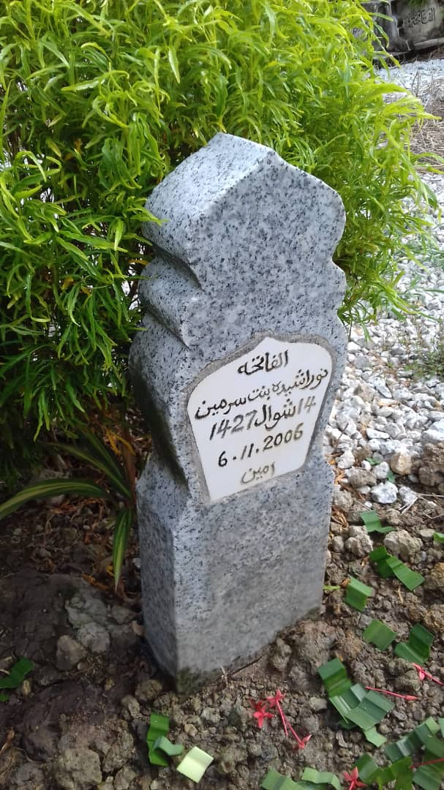
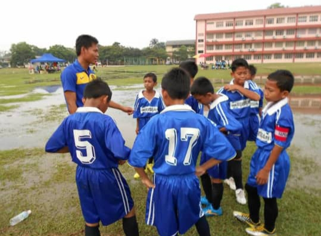
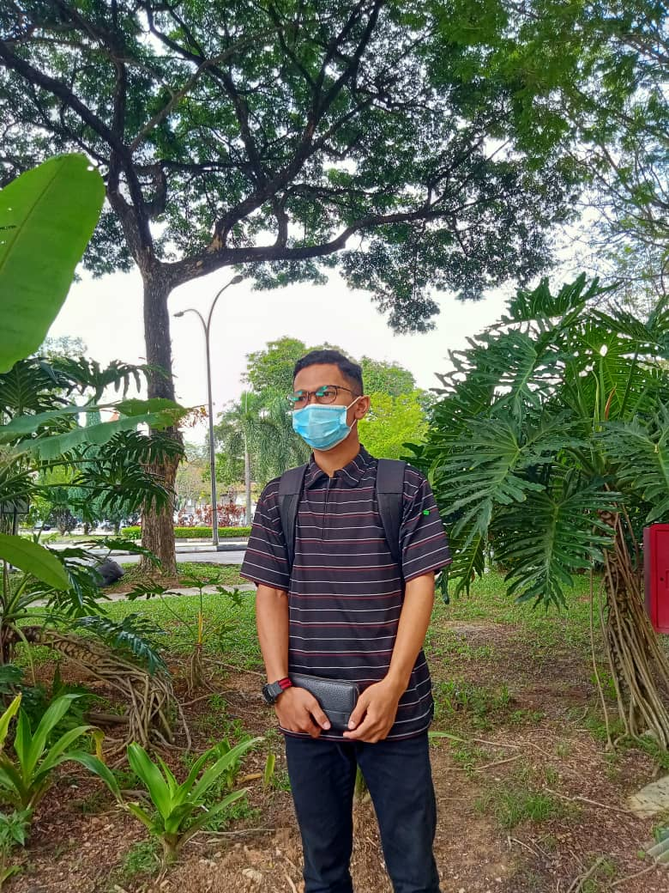

GALLERY
'What I Like About Photographs Is That They Capture A Moment That Is Gone Forever, Impossible To Reproduce But Remains In The Memory Forever'

Going camping with my friends at Sungai Pertak

Me and my family picture when I am 5 years old
My mother's grave
Represented my school in football during my primary school

Me and my beloved family
Me after studying at Raja Tun Uda Library, Shah Alam